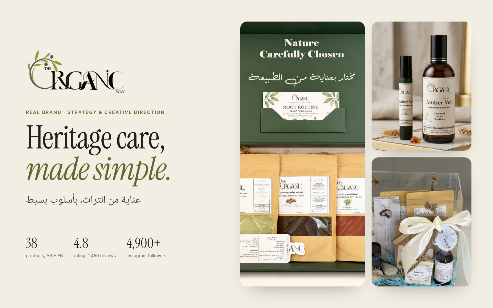
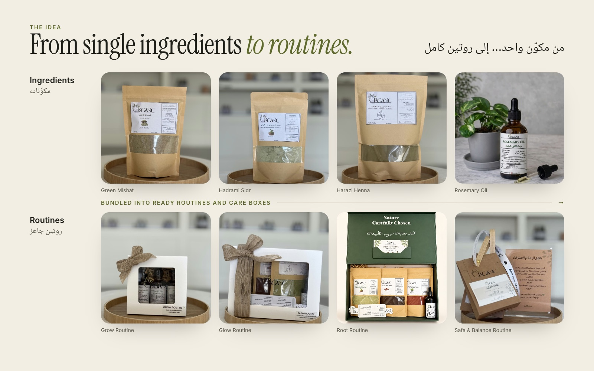
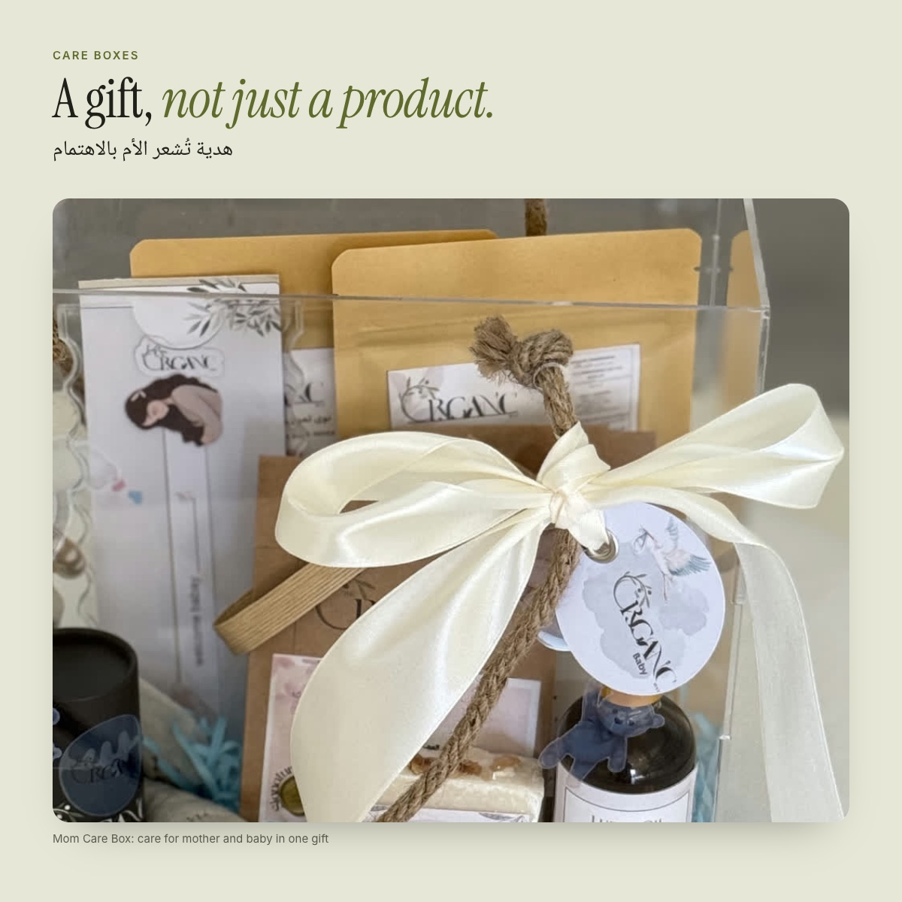
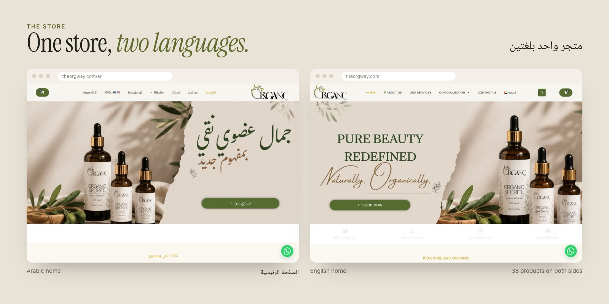

Aisha Ahmed
Aisha Ahmed( Exhibit I · Real brand · strategy & creative direction )
The Organic Way
Heritage care, made simple.
ذا أورجانيك وي

The brief
Henna, sidr, mishat and pure oils are beauty secrets women across the Gulf grew up with, but they are usually sold as plain powders with no guidance. The aim was an Emirati brand that keeps that heritage and makes it easy to choose, easy to gift and easy to buy online, in Arabic and in English.
The approach
- 01
Sell routines, not powders
Single ingredients were bundled into ready routines (Grow, Glow, Root, Safa & Balance) so a customer buys a result, not a recipe to work out at home.
- 02
Heritage with a signature
Familiar ingredients in formats that feel like a treat: scented hair & body mists (Amber Veil, Ayla Aura), herbal blends and gift-ready care boxes such as the Mom Care Box.
- 03
One brand, every channel, two languages
A bilingual store with all 38 products in Arabic and English, Instagram highlights organised like store aisles (reviews, offers, products, mother & baby) and a loyalty programme to bring customers back.





What it became
What I learned
Followers are not reach. With 4,900+ followers, the latest posts averaged about 3.5 likes, around 0.07% of the audience, so most followers were not seeing the content. My next focus is the channels we can reach directly: loyalty members and WhatsApp. I also audited the store and flagged the small things that cost trust, such as two different customer counts on two pages and leftover template text.
Real brand, owned and run by my sister. The ideas and strategy are mine; she executed them. Product photography by The Organic Way. Figures are public figures from the brand's store and Instagram, November 2026.
Next exhibitTamra →